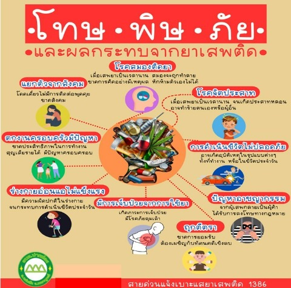
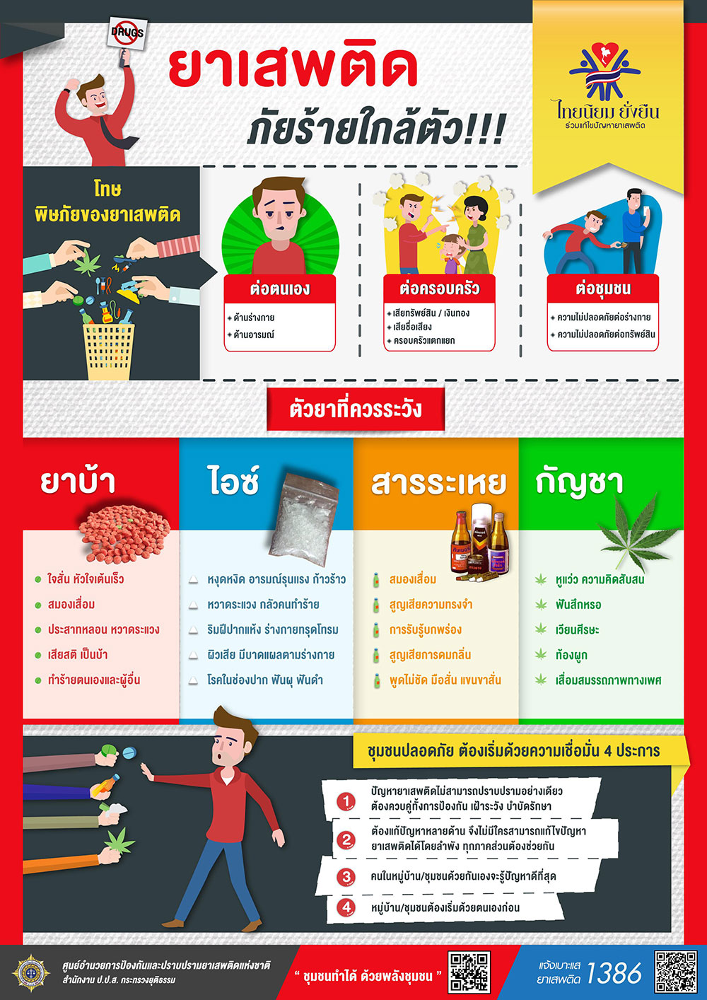
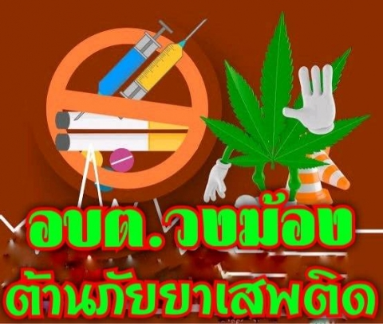

โทษของยาเสพติด
ยาเสพติดภัยร้ายใกล้ตัวท่านทราบหรือไม่ว่า... หากมีผู้เสพผู้ติดยาเสพติดเพียงแค่ 1 คน ก็อาจก่อให้เกิดปัญหาแก่คนในหมู่บ้าน-ชุมชนได้ ยาเสพติดจึงเป็นภัยร้ายที่อาจใกล้ตัวมากกว่าที่คิด และไม่ใช่แค่ยาเสพติดผิดกฎหมาย ที่รู้จักกันดี เช่น ยาบ้า ไอซ์ กัญชา และสารระเหย เป็นต้น ยาที่ใช้รักษาโรค หากนำมาใช้ผิดวิธี ใช้ในทางที่ผิดก็ส่งผลร้ายไม่ต่างกับยาเสพติดเช่นกัน ทั้งในกลุ่มยาแก้ไอ แก้แพ้ และแก้ปวด
โทษและพิษภัยยาเสพติด
ต่อตนเอง ยาเสพติดส่งผลร้ายทำลายร่างกายระบบต่างๆ ทำให้ประสาทหลอน ความจำเสื่อม หลอดลมอักเสบ หัวใจวาย โลหิตจาง มะเร็งในเม็ดเลือด ปอดอักเสบหรือมะเร็งปอด ไตอักเสบ มีเลือดออกในกระเพาะอาหาร ปวดท้องรุนแรง ความต้องการทางเพศลดลง หรืออาจเสื่อมสมรรถภาพทางเพศได้ ฯลฯ และนอกจากจะส่งผลต่อร่างกายแล้วยังส่งผลต่อจิตใจและอารมณ์อีกด้วย ทำให้อารมณ์เปลี่ยนแปลงเร็ว หงุดหงิดง่าย ขาดการใช้เหตุผล ฯลฯ การนึกสนุกทดลองใช้ยาเสพติดจะส่งผลต่อสมองโดยไม่รู้ตัว และหากมีปัญหาในชีวิตก็ไม่จำเป็นต้องพึ่งพาใช้ยาเสพติด เพราะปัญหาจะยิ่งถลำลึกและมีปัญหาอื่นๆ ตามมาได้
ต่อครอบครัว นอกจากผลร้ายที่เกิดขึ้นจากตัวผู้เสพเอง ยาเสพติดยังส่งผลต่อครอบครัวผู้เสพ ทำให้ต้องเสียเงินทองทรัพย์สินไปกับยาเสพติดโดยไม่จำเป็น เสียค่าใช้จ่ายเพื่อมาดูแลอาการเจ็บป่วยที่เกิดขึ้นจาก ยาเสพติด ทำให้ครอบครัวเสียชื่อเสียง เกิดความไม่เข้าใจกัน ทำให้ครอบครัวแตกแยกได้
ต่อชุมชน ด้วยภาวะการติดยาเสพติดทำให้ต้องใช้อย่างต่อเนื่อง หากผู้เสพผู้ติดไม่มีเงินมากพอที่จะซื้อยาเสพติดได้อย่างต่อเนื่องก็อาจส่งผลให้เกิดปัญหาการลักขโมย ความไม่ปลอดภัยต่อทรัพย์สินในชุมชน และเมื่อฤทธิ์ยาส่งผลทำให้เกิดอาการทางจิตและประสาท ก็อาจส่งผลต่อความไม่ปลอดภัยในร่างกายและชีวิตของคนในชุมชนได้ ดังนั้น จากผู้เสพผู้ติดเพียงแค่ 1 คน ก็อาจส่งผลต่อชุมชนได้ หากชุมชนนั้นขาดการเฝ้าระวังและป้องกันภัยยาเสพติดที่ดีพอ
ตัวยาที่ควรระวัง ยาเสพติดมีมากมายกว่าร้อยชนิด แต่ยาเสพติดที่ควรระวังที่สำคัญ มีดังนี้
ยาบ้า ออกฤทธิ์กระตุ้นประสาท ระยะแรกทำให้ร่างกายตื่นตัว ใจสั่น หัวใจเต้นเร็ว แต่เมื่อหมดฤทธิ์ยา จะรู้สึกอ่อนเพลียทำให้การตัดสินใจช้าและผิดพลาด ถ้าใช้ในปริมาณมากอย่างต่อเนื่องจะทำให้สมองเสื่อม เกิดอาการประสาทหลอน เห็นภาพลวงตา หวาดระแวง คลุ้มคลั่ง เสียสติ เป็นบ้า อาจทำร้ายตนเองและผู้อื่นได้
ไอซ์ ออกฤทธิ์กระตุ้นระบบประสาทอย่างรุนแรงทำให้หงุดหงิด กระวนกระวาย อารมณ์รุนแรง ก้าวร้าว หวาดระแวง เพ้อ คลั่ง กลัวคนทำร้าย ริมฝีปากแห้ง ร่างกายทรุดโทรม ใบหน้าแก่กว่าวัย เป็นโรคในช่องปาก ฟันผุ ฟันดำ และมีบาดแผลตามใบหน้าและร่างกายเนื่องจากผิวแห้งเสีย ไม่ได้ทำให้ผอม ขาว สวยแต่อย่างใด
กัญชา เบื้องต้นมีฤทธิ์กระตุ้นประสาท ทำให้ตื่นเต้น ช่างพูด และหัวเราะตลอดเวลา ต่อมาจะกดประสาททำให้เซื่องซึม หากเสพเข้าไปในปริมาณมากๆ จะหลอนประสาททำให้หูแว่ว ความคิดสับสน ควบคุมตัวเองไม่ได้
สารระเหย ออกฤทธิ์กดระบบประสาท พบในกาว แลคเกอร์ ทินเนอร์ น้ำมันเบนซิน ยาล้างเล็บ น้ำมันผสมสี น้ำมันก๊าด สีกระป๋องสำหรับพ่น โทษเฉียบพลันหลังสูดดม อาจหมดสติหรือกดศูนย์การหายใจ ทำให้ตายได้ และหากสูดดมติดต่อเป็นเวลานาน ทำให้เสื่อมสมรรถภาพ พูดไม่ชัด มือสั่น แขนขาสั่น เดินไม่ตรงทาง สมองเสื่อม
ชุมชนปลอดภัย เริ่มต้นจากพลังในชุมชน
